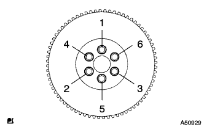

Installation of engine rear oil seal |
| 1. Installation of engine rear oil seal |
Apply a small amount of MP grease No.2 to the lip of the new oil seal.
 |
Use the SST to even hit the oil seal to the end of the cylinder.
| 2. Drive plate & ring gear SUB-ASSY installation |
 |
Use SST to fix the crankshaft damper.
Done of the removed bolt and bolt holes.
Drive plate & ring gear Attached to 2-3 screws to the bolt tip of the bolt with Adherive 1234.
|  |
Tighten the six bolts in the order of the figure and attach the drive plate & ring gear.
| 3. Installation of Automatic Trans Axle |
reference)